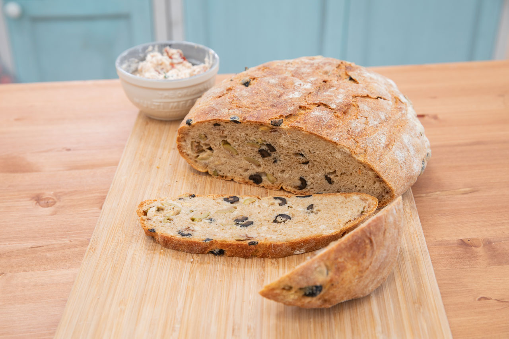
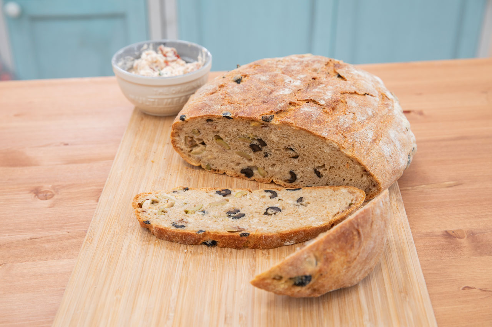

„Olivový chléb je druhá dobrota, která mě zřejmě dostala do soutěže. Takže nostalgie. A hlavně je výborný! Každopádně maličko od castingu ‚vytuněný‘.“
92 g zelených oliv bez pecek
92 g černých oliv bez pecek
hrst vlašských ořechů
500 g mouky na chléb
5 g soli
½ lžičky sušeného česneku
1 lžička sušeného chilli
1 lžička sušeného rozmarýnu
čerstvý tymián
kostka droždí
120 ml vody + 240 ml vody
olivový olej
mouka na podsyp
kukuřičná mouka
Nakrájíme olivy na čtvrtky. V míse smícháme chlebovou mouku, sůl, česnek, rozmarýn, chilli a tymián. V malé misce rozdrobíme droždí a zalijeme 120 ml teplé vody, vlijeme do mouky, dolijeme 240 ml teplé vody a vypracujeme mírně lepivé těsto, do kterého přidáme nakrájené olivy a ořechy.
Těsto přendáme do mísy, kterou jsme vymazali olivovým olejem a i na těsto nalijeme pár kapek, rozmažeme a přikryjeme ho potravinářskou fólií.
Těsto by mělo ztrojnásobit svůj objem kynutím. Po vykynutí ho přendáme na pomoučený vál, rozprostřeme a jakoby srolujeme. Poté ho dáme na látkovou utěrku, kterou posypeme moukou a kukuřičnou moukou a necháme 30 minut zabalené odpočívat.
Rozpálíme si troubu na 240 °C a vložíme do ní litinový hrnec bez poklice. Chléb přendáme z utěrky do rozpáleného hrnce, přiklopíme pokličkou a pečeme 25 až 30 minut na 240 °C. Po uplynutí doby stáhneme na 230 °C a odklopíme pokličku, pečeme ještě asi 20 minut, dokud chléb nezezlátne.
Poté ho vyklopíme na mřížku a necháme zchladnout.
Můžeme ho podávat se sýrovou pomazánkou se sušenými rajčaty a parmezánem.
Pomazánka se sušenými rajčaty
1 mascarpone
sušená rajčata naložená v oleji
bylinky dle chuti (pažitka, petržel, libeček...)
sůl
pepř
12% smetana
Mascarpone dáme do misky, přilijeme smetanu dle potřeby a vymícháme krémovou hmotu. Přidáme na kousky nakrájená rajčata (popřípadě i pokud jsou kapary), sůl, pepř, bylinky. Část smetany můžeme nahradit olejem z rajčat. Má báječnou chuť koření.
 
